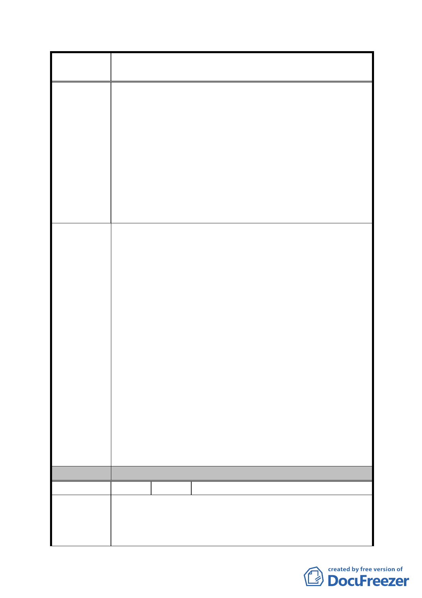

案
名
修訂臺北市「基隆河（中山橋至成美橋段）附近地區土地使
用分區與都市設計管制要點」（北段地區）計畫案
富之開放空間系統。若本案之建築物高度不得超過 60 公
尺，將嚴重限縮本案之設計規劃方向及創意，無法延續大
彎北段整體之都市景觀軸線。
五、開發許可：（三）本計畫區商業區及娛樂區內非作住宅
使用之建築物內部公眾使用設施（如梯
廳、廁所、茶水間等）應集中留設。
1.面臨計畫道路可獨立經營之店面、健身服務業等使用均
有獨立設置廁所或茶水間之需求。
2.需考量夜間加班之婦女於使用集中留設廁所之方便性
並防範治安風險。
一、土地及建築物之使用：
維持 97.1.30 原公展修訂內容，即「「娛樂區（供娛樂健
身使用）」之土地及建築物使用，其建築物底層部（地面
層第一至第二層）應作附表 1 指定之使用項目，其餘樓層
得比照台北市土地使用分區管制規則第三種商業區之規
定辦理。」
二、土地使用強度：
取消商業區、娛樂區最小建蔽率之限制；或將採用綜合設
計放寬規定者之最小建蔽率由 40％調降至 30％。
建 議 辦 法 三、容積放寬規定：
維持 97.1.30 公展版修訂內容。
四、建築物高度：
取消「娛樂區（供娛樂健身使用）」之建築物最高高度以
不超過 60 公尺為原則之規定。建議修正為建築物高度以
不影響飛航安全為準。
五、開發許可：
1.取消左列各項限制或
2.改為原則性規定，於個案提送都市設計審議時，視其基
地條件及規劃設計案內容合理性逐案審查即可。
委 員 會 決 議 同編號 1。
編 號 33 陳情人 王貴雲（士林靈糧堂代表人）（B3）
一、本案都市計畫自 92 年 1 月 7 日公告迄今已逾 5 年，隨
陳情理由
著產業發展及房屋市場之變化，大彎北段商業區及娛樂
區發展現況，除美麗華、家樂福…等少數全棟商業使用
外，違規作為住宅使用之大樓甚多，因此本次通盤檢討，
- 94 -